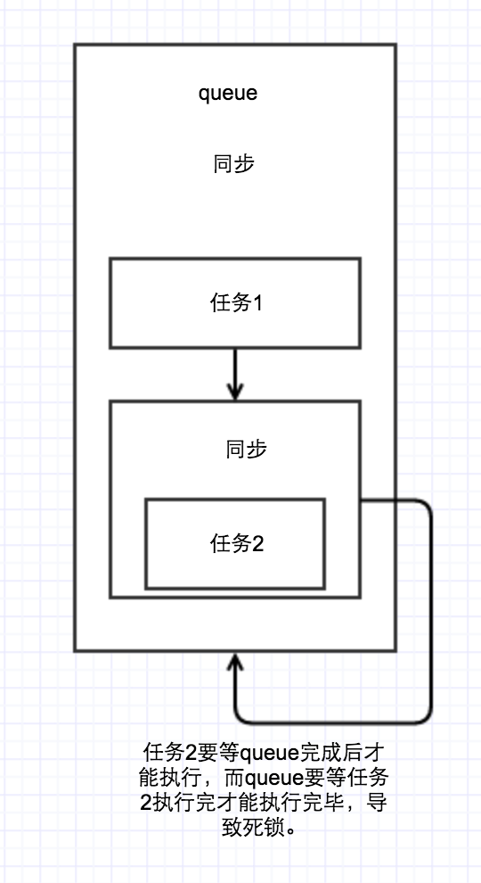
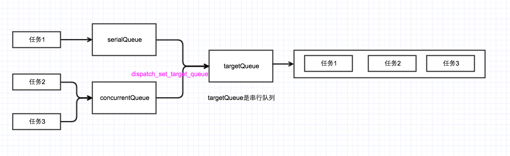
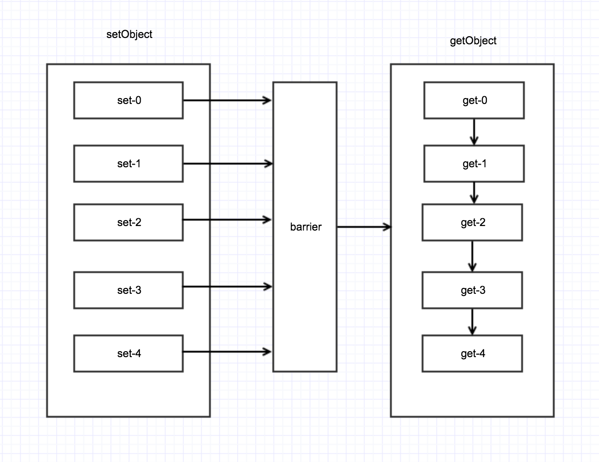

关于GCD
GCD是什么？
Grand Central Dispatch或者GCD，是一套低层API，提供了一种新的方法来进行并发程序编写。从基本功能上讲，GCD有点像NSOperationQueue，他们都允许程序将任务切分为多个单一任务然后提交至工作队列来并发地或者串行地执行。GCD比之NSOpertionQueue更底层更高效，并且它不是Cocoa框架的一部分。
GCD的原理？
GCD是纯C语言的，但它被组建成面向对象的风格。GCD对象被称为dispatch object。Dispatch object像Cocoa对象一样是引用计数的。使用dispatch_release和dispatch_retain函数来操作dispatch object的引用计数来进行内存管理。
GCD提供很多超越传统多线程编程的优势：
易用: GCD比之thread跟简单易用。由于GCD基于work unit而非像thread那样基于运算，所以GCD可以控制诸如等待任务结束、监视文件描述符、周期执行代码以及工作挂起等任务。基于block的血统导致它能极为简单得在不同代码作用域之间传递上下文。
效率: GCD被实现得如此轻量和优雅，使得它在很多地方比之专门创建消耗资源的线程更实用且快速。这关系到易用性：导致GCD易用的原因有一部分在于你可以不用担心太多的效率问题而仅仅使用它就行了。
性能: GCD自动根据系统负载来增减线程数量，这就减少了上下文切换以及增加了计算效率。
GCD的使用
1.GCD的队列
GCD有三种队列类型：
1.主队列:与主线程功能相同。实际上，提交至 主队列 的任务会在主线程中执行。 主队列 可以调用dispatch_get_main_queue()来获得。因为 主队列 是与主线程相关的，所以这是一个串行队列。
2.全局队列:全局队列是 并发队列 ，并由整个进程共享。进程中存在三个全局队列：高、中（默认）、低三个优先级队列。可以调用dispatch_get_global_queue函数传入优先级来访问队列。
3.自建队列: 是用函数 dispatch_queue_create创建的队列。 可控制创建的队列是串行还是并行。
//DISPATCH_QUEUE_SERIAL 串行
//DISPATCH_QUEUE_CONCURRENT 并行
dispatch_queue_t queue = dispatch_queue_create("LMQueue", DISPATCH_QUEUE_CONCURRENT);
//获取主队列
dispatch_queue_t mainQueue = dispatch_get_main_queue();
//获取全局队列
/**
第一个参数
设置全局队列的优先级
#define DISPATCH_QUEUE_PRIORITY_HIGH 2
#define DISPATCH_QUEUE_PRIORITY_DEFAULT 0
#define DISPATCH_QUEUE_PRIORITY_LOW (-2)
#define DISPATCH_QUEUE_PRIORITY_BACKGROUND INT16_MIN
QOS_CLASS_USER_INTERACTIVE: 最高优先级，交互级别。使用这个优先级会占用几乎所有的系统CUP和I/O带宽，仅限用于交互的UI操作，比如处理点击事件，绘制图像到屏幕上，动画等
QOS_CLASS_USER_INITIATED: 次高优先级，用于执行类似初始化等需要立即返回的事件
QOS_CLASS_DEFAULT: 默认优先级，当没有设置优先级的时候，线程默认优先级。一般情况下用的都是这个优先级
QOS_CLASS_UTILITY: 普通优先级，主要用于不需要立即返回的任务
QOS_CLASS_BACKGROUND: 后台优先级，用于用户几乎不感知的任务。
QOS_CLASS_UNSPECIFIED: 未知优先级，表示服务质量信息缺失
第二个参数
flags: 预留字段，传入任何非0的值都可能导致返回NULL
*/
dispatch_queue_t globalQueue = dispatch_get_global_queue(DISPATCH_QUEUE_PRIORITY_DEFAULT, 0);
2.同步与异步(Synchronous,Asynchronous)
同步，意味着在当前线程中执行任务，不具备开启新的线程的能力，同步的都是串行执行。
异步，在新的线程中执行任务，具备开启新的线程的能力。
3.并行和串行(Concurrent,Serial)
任务串行，意味着在同一时间，有且只有一个任务被执行，即一个任务执行完毕之后再执行下一个任务。
任务并发，意味着在同一时间，有多个任务被执行。
dispatch_queue_t queue = dispatch_queue_create("LMQueue", DISPATCH_QUEUE_CONCURRENT);
dispatch_async(queue, ^{
NSLog(@"1->%@",[NSThread currentThread]);
//同步在当前线程执行，如果当前线程是主线程，会在主线程运行。或者执行线程在主线程的话也会返回主线程。
dispatch_sync(queue, ^{
NSLog(@"4->%@",[NSThread currentThread]);
});
dispatch_sync(queue, ^{
NSLog(@"5->%@",[NSThread currentThread]);
});
dispatch_sync(mainQueue, ^{
NSLog(@"6->%@",[NSThread currentThread]);
});
});
dispatch_async(queue, ^{
NSLog(@"2->%@",[NSThread currentThread]);
});
dispatch_async(queue, ^{
NSLog(@"3->%@",[NSThread currentThread]);
});
1-><NSThread: 0x600000266900>{number = 3, name = (null)}
3-><NSThread: 0x608000263680>{number = 5, name = (null)}
2-><NSThread: 0x618000265cc0>{number = 4, name = (null)}
4-><NSThread: 0x600000266900>{number = 3, name = (null)}
5-><NSThread: 0x600000266900>{number = 3, name = (null)}
6-><NSThread: 0x60000007bc40>{number = 1, name = main}
可以看出如果是同步操作的话，是在当前线程操作不会创建新线程。异步并行的话，在不同线程中操作，而且是没有循序的。
 

4.死锁
线程互相等待，即死锁。
所谓的死锁是指它们都卡住了，并等待对方完成或执行其它操作。第一个不能完成是因为它在等待第二个的完成。但第二个也不能完成，因为它在等待第一个的完成。
这个时候就是发生了死锁，我们禁止在主队列（iOS开发中，主队列是串行队列）中，在同步使用主队列执行任务，同理，禁止在同一个同步串行队列中，再使用该串行队列同步的执行任务，因为这样会造成死锁。
//1.创建串行队列
dispatch_queue_t queue = dispatch_queue_create("LMQueue", DISPATCH_QUEUE_SERIAL);
//2.同步执行
dispatch_async(queue, ^{
NSLog(@"1");
//再用该队列执行同步任务会导致死锁。
//导致死锁的原因是，队列是串行要等到前一个任务完成后才能执行下一个，当前串行队列中再创建一个串行任务，导致队列一直无法完成任务出现死锁现象。
dispatch_sync(queue, ^{
NSLog(@"2");
});
});

4.dispatch_set_target_queue
-(void) testGCD2{
dispatch_queue_t targetQueue = dispatch_queue_create("targetQueue", DISPATCH_QUEUE_SERIAL);
dispatch_queue_t serialQueue = dispatch_queue_create("serialQueue", DISPATCH_QUEUE_SERIAL);
dispatch_queue_t concurrentQueue = dispatch_queue_create("concurrentQueue", DISPATCH_QUEUE_CONCURRENT);
dispatch_set_target_queue(serialQueue, targetQueue);
dispatch_set_target_queue(concurrentQueue, targetQueue);
dispatch_async(serialQueue, ^{
NSLog(@"1>>>%@",[NSThread currentThread]);
[NSThread sleepForTimeInterval:3.f];
});
dispatch_async(concurrentQueue, ^{
NSLog(@"2>>>%@",[NSThread currentThread]);
[NSThread sleepForTimeInterval:2.f];
});
dispatch_async(concurrentQueue, ^{
NSLog(@"3>>>%@",[NSThread currentThread]);
[NSThread sleepForTimeInterval:1.f];
});
}
1>>><NSThread: 0x618000075900>{number = 3, name = (null)}
2>>><NSThread: 0x618000075900>{number = 3, name = (null)}
3>>><NSThread: 0x618000075900>{number = 3, name = (null)}
调用dispatch_set_target_queue会retain新目标队列queue，release原有目标队列。设置目标队列之后，block将会在目标队列中执行。注意：当目标队列串行时，任何在目标队列中执行的block都会串行执行，无论原队列是否串行

5.dispatch_after
dispatch_after(dispatch_time_t when, dispatch_queue_t queue, dispatch_block_t block);
dispatch_time_t dispatch_time ( dispatch_time_t when, int64_t delta );
第一个参数为DISPATCH_TIME_NOW表示当前。第二个参数的delta表示纳秒，一秒对应的纳秒为1000000000，系统提供了一些宏来简化
#define NSEC_PER_SEC 1000000000ull //每秒有多少纳秒
#define USEC_PER_SEC 1000000ull //每秒有多少毫秒
#define NSEC_PER_USEC 1000ull //每毫秒有多少纳秒
这样如果要表示一秒就可以这样写
dispatch_time(DISPATCH_TIME_NOW, 1 * NSEC_PER_SEC);
dispatch_time(DISPATCH_TIME_NOW, 1000 * USEC_PER_SEC);
dispatch_time(DISPATCH_TIME_NOW, USEC_PER_SEC * NSEC_PER_USEC);
需要注意的是这里的延时是不精确的，因为加入队列不一定会立即执行。延时1s可能会1.5s甚至2s之后才会执行。
6.dispatch_barrier
dispatch_barrier其阻碍的作用，在线程任务没有完成的时候不允许继续执行，确保提交的闭包是指定队列中在特定时段唯一在执行的一个,可解决多线程并发读写同一个资源发生死锁。
-(void) testBarrier{
dispatch_queue_t queue = dispatch_queue_create("LMBarrier", DISPATCH_QUEUE_CONCURRENT);
dispatch_async(queue, ^{
NSLog(@"任务1>>%@",[NSThread currentThread]);
});
dispatch_barrier_async(queue, ^{
[NSThread sleepForTimeInterval:2];
NSLog(@"barrier>>%@",[NSThread currentThread]);
});
dispatch_async(queue, ^{
NSLog(@"任务2>>%@",[NSThread currentThread]);
});
dispatch_async(queue, ^{
NSLog(@"任务3>>%@",[NSThread currentThread]);
});
dispatch_async(queue, ^{
NSLog(@"任务4>>%@",[NSThread currentThread]);
});
}
任务1>><NSThread: 0x60800007d280>{number = 3, name = (null)}
barrier>><NSThread: 0x60800007d280>{number = 3, name = (null)}
任务2>><NSThread: 0x60800007d280>{number = 3, name = (null)}
任务4>><NSThread: 0x618000262b80>{number = 5, name = (null)}
任务3>><NSThread: 0x61000007c600>{number = 4, name = (null)}
任务2，3，4要在barrier完成后才能执行
-(void) testBarrier2{
dispatch_async(dispatch_get_global_queue(0, 0), ^{
for (int i = 0; i < 5; i++) {
[self setObject:@(i) forKey:[NSString stringWithFormat:@"%d",i]];
}
});
dispatch_async(dispatch_get_global_queue(0, 0), ^{
for (int i = 0; i< 5; i++) {
[self objectForKey:[NSString stringWithFormat:@"%d",i]];
}
});
}
- (void)setObject:(id)anObject forKey:(id<NSCopying>)aKey
{
dispatch_sync(self.queue, ^{
[self.dataDic setObject:anObject forKey:aKey];
NSLog(@"setObject->%@>>>%@",anObject,[NSThread currentThread]);
[NSThread sleepForTimeInterval:1];
});
}
- (id)objectForKey:(id)aKey
{
__block id object = nil;
dispatch_sync(self.queue, ^{
object = [self.dataDic objectForKey:aKey];
NSLog(@"getObject->%@>>>%@",object,[NSThread currentThread]);
});
return object;
}
getObject->0>>><NSThread: 0x60000026afc0>{number = 4, name = (null)}
setObject->0>>><NSThread: 0x6080002609c0>{number = 3, name = (null)}
getObject->(null)>>><NSThread: 0x60000026afc0>{number = 4, name = (null)}
getObject->(null)>>><NSThread: 0x60000026afc0>{number = 4, name = (null)}
getObject->(null)>>><NSThread: 0x60000026afc0>{number = 4, name = (null)}
getObject->(null)>>><NSThread: 0x60000026afc0>{number = 4, name = (null)}
setObject->1>>><NSThread: 0x6080002609c0>{number = 3, name = (null)}
setObject->2>>><NSThread: 0x6080002609c0>{number = 3, name = (null)}
setObject->3>>><NSThread: 0x6080002609c0>{number = 3, name = (null)}
setObject->4>>><NSThread: 0x6080002609c0>{number = 3, name = (null)}
NSMutableDictionary在多个线程中如果同时写入，或者一个线程写入一个线程读取，会发生无法预料的错误。
- (void)setObject:(id)anObject forKey:(id<NSCopying>)aKey
{
dispatch_barrier_async(self.queue, ^{
[self.dataDic setObject:anObject forKey:aKey];
NSLog(@"setObject->%@>>>%@",anObject,[NSThread currentThread]);
[NSThread sleepForTimeInterval:1];
});
}
我们使用dispatch_barrier_async，让其单独执行写入操作，不允许其他写入操作或者读取操作同时执行。当读取的时候，我们只需要直接使用dispatch_sync，让其正常读取即可。这样就可以保证写入时不被打扰，读取时可以多个线程同时进行。
setObject->0>>><NSThread: 0x608000077ac0>{number = 3, name = (null)}
setObject->1>>><NSThread: 0x608000077ac0>{number = 3, name = (null)}
setObject->2>>><NSThread: 0x608000077ac0>{number = 3, name = (null)}
setObject->3>>><NSThread: 0x608000077ac0>{number = 3, name = (null)}
setObject->4>>><NSThread: 0x608000077ac0>{number = 3, name = (null)}
getObject->0>>><NSThread: 0x600000071ec0>{number = 4, name = (null)}
getObject->1>>><NSThread: 0x600000071ec0>{number = 4, name = (null)}
getObject->2>>><NSThread: 0x600000071ec0>{number = 4, name = (null)}
getObject->3>>><NSThread: 0x600000071ec0>{number = 4, name = (null)}
getObject->4>>><NSThread: 0x600000071ec0>{number = 4, name = (null)}

7.dispatch_apply
类似for循环，但是在并发队列的情况下dispatch_apply会并发执行block任务,会等迭代其中的任务全部完成以后,才会返回。
dispatch_apply可进行快速迭代，因为可以并行执行，所以使用dispatch_apply可以运行的更快。
如果在主线程调用dispatch_apply会阻塞主线程，可以dispatch_apply放在子线程中执行。
-(void) testApply{
__block int a = 0;
dispatch_apply(9, dispatch_get_global_queue(0, 0), ^(size_t index) {
a += index;
});
NSLog(@"%d",a);
dispatch_async(dispatch_get_global_queue(0, 0), ^{
dispatch_apply(9, dispatch_get_global_queue(0, 0), ^(size_t index) {
a += index;
});
NSLog(@"%d",a);
});
}
8.set_specific & get_specific
有时候我们需要将某些东西关联到队列上，比如我们想在某个队列上存一个东西，或者我们想区分2个队列。GCD提供了dispatch_queue_set_specific方法，通过key，将context关联到queue上
const void * tag1="tag1";
const void * tag2="tag2";
- (void)viewDidLoad {
[super viewDidLoad];
_queue1 = dispatch_queue_create(tag1, DISPATCH_QUEUE_CONCURRENT);
_queue2 = dispatch_queue_create(tag2, DISPATCH_QUEUE_CONCURRENT);
NSString *string1 = @"string1";
NSString *string2 = @"string2";
//context 将程序中定义的上下文传递给参数。
dispatch_queue_set_specific(_queue1, tag1, (__bridge void * _Nullable)(string1), NULL);
dispatch_queue_set_specific(_queue2, tag2, (__bridge void * _Nullable)(string2), NULL);
for (int i = 0; i < 5; i++) {
dispatch_async(_queue1, ^{
[self getSpecific];
});
dispatch_async(_queue2, ^{
[self getSpecific];
});
}
}
-(void)getSpecific{
if (dispatch_get_specific(tag1)) {
NSLog(@"tag1->%@",[NSThread currentThread]);
//根据queue和key取出context，queue参数不能传入全局队列
NSString *context = (__bridge NSString*)(dispatch_queue_get_specific(_queue1, tag1));
NSLog(@"tag1Value->%@",context);
}else if (dispatch_get_specific(tag2)){
NSLog(@"tag2->%@",[NSThread currentThread]);
NSString * context = (__bridge NSString*)(dispatch_queue_get_specific(_queue2, tag2));
NSLog(@"tag2Value->%@",context);
}
}
9.dispatch_set_context和dispatch_set_finalizer_f
context他是将上下文传递给参数，而这个context所需要的内容是一个基于C语言的指针，可以通过桥接(__bridge)来把OC的对象转换。
-(void) testContext{
LMContextTest *context = [[LMContextTest alloc] init];
context.name = @"lemon";
dispatch_set_context(_queue1, (__bridge void *)context);
dispatch_async(_queue1, ^{
LMContextTest *context = (__bridge LMContextTest*)dispatch_get_context(_queue1);
NSLog(@"%@",context.name);
});
}
这样写会导致context出了作用域就会销毁，可能导致线程queue1中的context成为野指针而崩溃。
所以要用到（__bridge_retained）把context管理权从ARC中移除，但这样子context就不能自定释放，而我们不知道释放的时机。这时候我们就引入dispatch_set_finalizer_f方法，在线程销毁的时候把context也销毁掉，dispatch_set_finalizer_f函数为dispatch queue设置清理函数，当dispatch queue的引用计数达到0时，其所指定的清理函数就会被调用。
-(void) testContext{
LMContextTest *context = [[LMContextTest alloc] init];
context.name = @"lemon";
//用__bridge_retained增加context的引用计算，因为context是局部变量出了作用域就会销毁导致线程中的context成为野指针
dispatch_set_context(_queue1, (__bridge_retained void *)context);
dispatch_set_finalizer_f(_queue1, &cleanContext);
dispatch_async(_queue1, ^{
LMContextTest *data = (__bridge LMContextTest*)dispatch_get_context(_queue1);
NSLog(@"%@",data.name);
});
}
void cleanContext(void *context){
//__bridge_transfer 类型转换Core Foundation->OC对象,同时将管理权移回ARC
LMContextTest *ct = (__bridge_transfer LMContextTest*)context;
ct = nil;
NSLog(@"clean the data");
}
10.dispatch_once
dispatch_once的作用：对于某个任务执行一次，且只执行一次。 dispatch_once函数有两个参数，第一个参数predicate用来保证执行一次，第二个参数是要执行一次的任务block。
+(id) shareMananger {
static dispatch_once_t onceToken;
static LMManager *manager = nil;
dispatch_once(&onceToken, ^{
manager = [[LMManager alloc] init];
});
return manager;
}
使用dispatch_once可以简化代码并且彻底保证线程安全，开发者无需担心加锁或同步。此外，dispatch_once更高效，它没有使用重量级的同步机制，若是那样做的话，每次运行代码前都要获取锁。相反，此函数采用“原子访问”来查询标记，以判断其所对应的代码原来是否已经执行过
11.dispatch_groups
dispatch_groups是专门用来监视多个异步任务。dispatch_group_t实例用来追踪不同队列中的不同任务。
当group里所有事件都完成,GCD API有两种方式发送通知，第一种是dispatch_group_wait，会阻塞当前进程，等所有任务都完成或等待超时。第二种方法是使用dispatch_group_notify，异步执行闭包，不会阻塞。
-(void) testGroup{
dispatch_group_t group = dispatch_group_create();
dispatch_queue_t queue = dispatch_queue_create("LMQueue", DISPATCH_QUEUE_CONCURRENT);
dispatch_group_async(group, queue, ^{
for (int i = 0; i < 5; i++) {
NSLog(@"%d->%@",i,[NSThread currentThread]);
}
});
dispatch_group_async(group, queue, ^{
NSLog(@"222222");
});
dispatch_group_async(group, queue, ^{
NSLog(@"333333");
});
//分组中的任务完成后会调用dispatch_group_notify方法
dispatch_group_notify(group, queue, ^{
NSLog(@"任务全部完成");
});
}
关于dispatch_group_enter和dispatch_group_leave间的关系。
dispatch_group_enter是通知dispatch group任务开始了。dispatch_group_leave保持和dispatch_group_enter配对,通知任务已经完成。dispatch_group_enter和dispatch_group_leave是成对调用,如果缺少了dispatch_group_leave，group不会结束。
-(void) testGroup3{
dispatch_group_t group = dispatch_group_create();
for(int i = 0; i < 5; i++)
{
dispatch_group_enter(group);
[self block:^{
dispatch_group_leave(group);
}];
}
// dispatch_group_wait等待所有任务都完成直到超时。如果任务完成前就超时了，函数会返回一个非零值，可以通过返回值判断是否超时。也可以用DISPATCH_TIME_FOREVER表示一直等。
dispatch_group_wait(group, DISPATCH_TIME_FOREVER);
NSLog(@"done");
}
-(void) block:(void(^)())block{
if (block) {
dispatch_async(dispatch_get_global_queue(0, 0), ^{
[NSThread sleepForTimeInterval:2];
NSLog(@"dddd");
block();
});
}
}
12.dispatch_semaphore
另外一种保证同步的方法。使用dispatch_semaphore_signal加1dispatch_semaphore_wait减1，为0时等待的设置方式来达到线程同步的目的和同步锁一样能够解决资源抢占的问题。
信号量是一个整形值并且具有一个初始计数值，并且支持两个操作：信号通知和等待。当一个信号量被信号通知，其计数会被增加。当一个线程在一个信号量上等待时，线程会被阻塞（如果有必要的话），直至计数器大于零，然后线程会减少这个计数。
当我们在处理一系列线程的时候，当数量达到一定量，可以用dispatch_semaphore来控制。
dispatch_semaphore_create 创建一个semaphore
dispatch_semaphore_signal 发送一个信号,信号量+1
dispatch_semaphore_wait 等待信号，信号量-1
-(void) testSemaphore{
dispatch_group_t group = dispatch_group_create();
dispatch_semaphore_t semaphore = dispatch_semaphore_create(10);
dispatch_queue_t queue = dispatch_get_global_queue(DISPATCH_QUEUE_PRIORITY_DEFAULT, 0);
for (int i = 0; i < 100; i++)
{
dispatch_semaphore_wait(semaphore, DISPATCH_TIME_FOREVER);
dispatch_group_async(group, queue, ^{
NSLog(@"%i -> %@",i, [NSThread currentThread]);
sleep(2);
dispatch_semaphore_signal(semaphore);
});
}
dispatch_group_wait(group, DISPATCH_TIME_FOREVER);
NSLog(@"完成");
}
创建了一个初使值为10的semaphore，每一次for循环都会创建一个新的线程，线程结束的时候会发送一个信号，线程创建之前会信号等待，所以当同时创建了10个线程之后，for循环就会阻塞，等待有线程结束之后会增加一个信号才继续执行，当最后的一次dispatch_semaphore_signal完成后，阻塞结束。